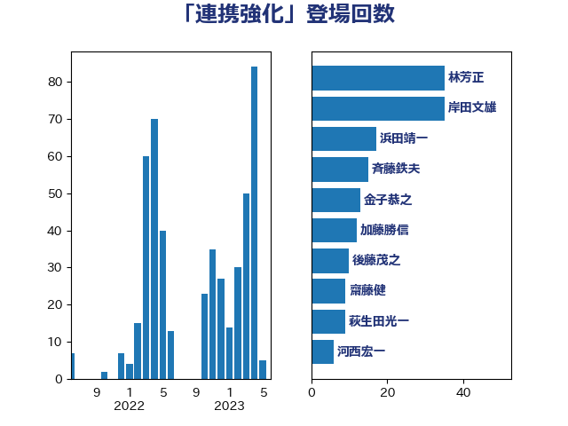

単語「連携強化」

| 林芳正 | 自由民主党 | 35 回 |
| 岸田文雄 | 自由民主党 | 35 回 |
| 浜田靖一 | 自由民主党 | 17 回 |
| 斉藤鉄夫 | 公明党 | 15 回 |
| 金子恭之 | 自由民主党 | 13 回 |
| 加藤勝信 | 自由民主党 | 12 回 |
| 後藤茂之 | 自由民主党 | 10 回 |
| 齋藤健 | 自由民主党 | 9 回 |
| 萩生田光一 | 自由民主党 | 9 回 |
| 河西宏一 | 公明党 | 6 回 |
| 松野博一 | 自由民主党 | 6 回 |
| 小倉將信 | 自由民主党 | 6 回 |
| 野田聖子 | 自由民主党 | 5 回 |
| 西村康稔 | 自由民主党 | 5 回 |
| 末松信介 | 自由民主党 | 5 回 |
| 吉良州司 | 無所属 | 5 回 |
| 鬼木誠 | 立憲民主党 | 4 回 |
| 柴田巧 | 日本維新の会 | 4 回 |
| 松本剛明 | 自由民主党 | 4 回 |
| 塩田博昭 | 公明党 | 4 回 |
| 井原巧 | 自由民主党 | 4 回 |
| 谷公一 | 自由民主党 | 3 回 |
| 角田秀穂 | 公明党 | 3 回 |
| 永岡桂子 | 自由民主党 | 3 回 |
| 小林鷹之 | 自由民主党 | 3 回 |
| 古川禎久 | 自由民主党 | 3 回 |
| 野村哲郎 | 自由民主党 | 2 回 |
| 進藤金日子 | 自由民主党 | 2 回 |
| 谷合正明 | 公明党 | 2 回 |
| 西岡秀子 | 国民民主党 | 2 回 |
| 芳賀道也 | 国民民主党 | 2 回 |
| 美延映夫 | 日本維新の会 | 2 回 |
| 稲津久 | 公明党 | 2 回 |
| 福田昭夫 | 立憲民主党 | 2 回 |
| 田村まみ | 国民民主党 | 2 回 |
| 森本真治 | 立憲民主党 | 2 回 |
| 木原誠二 | 自由民主党 | 2 回 |
| 日下正喜 | 公明党 | 2 回 |
| 庄子賢一 | 公明党 | 2 回 |
| 平木大作 | 公明党 | 2 回 |
| 山本博司 | 公明党 | 2 回 |
| 山口壯 | 自由民主党 | 2 回 |
| 小池晃 | 日本共産党 | 2 回 |
| 安江伸夫 | 公明党 | 2 回 |
| 城井崇 | 立憲民主党 | 2 回 |
| 吉田統彦 | 立憲民主党 | 2 回 |
| 吉川赳 | 無所属 | 2 回 |
| 吉川ゆうみ | 自由民主党 | 2 回 |
| 友納理緒 | 自由民主党 | 2 回 |
| 井野俊郎 | 自由民主党 | 2 回 |
| 井上哲士 | 日本共産党 | 2 回 |
| 中川郁子 | 自由民主党 | 2 回 |
| 三浦信祐 | 公明党 | 2 回 |
| おおつき紅葉 | 立憲民主党 | 2 回 |
| 鰐淵洋子 | 公明党 | 1 回 |
| 高橋千鶴子 | 日本共産党 | 1 回 |
| 高橋はるみ | 自由民主党 | 1 回 |
| 音喜多駿 | 日本維新の会 | 1 回 |
| 青柳仁士 | 日本維新の会 | 1 回 |
| 青木一彦 | 自由民主党 | 1 回 |
| 阿部司 | 日本維新の会 | 1 回 |
| 長谷川淳二 | 自由民主党 | 1 回 |
| 鈴木貴子 | 自由民主党 | 1 回 |
| 鈴木英敬 | 自由民主党 | 1 回 |
| 鈴木俊一 | 自由民主党 | 1 回 |
| 赤池誠章 | 自由民主党 | 1 回 |
| 赤嶺政賢 | 日本共産党 | 1 回 |
| 舩後靖彦 | れいわ新選組 | 1 回 |
| 自見はなこ | 自由民主党 | 1 回 |
| 簗和生 | 自由民主党 | 1 回 |
| 竹内真二 | 公明党 | 1 回 |
| 窪田哲也 | 公明党 | 1 回 |
| 穀田恵二 | 日本共産党 | 1 回 |
| 秋野公造 | 公明党 | 1 回 |
| 福島みずほ | 社会民主党 | 1 回 |
| 神谷裕 | 立憲民主党 | 1 回 |
| 礒崎哲史 | 国民民主党 | 1 回 |
| 石川香織 | 立憲民主党 | 1 回 |
| 石川博崇 | 公明党 | 1 回 |
| 石垣のりこ | 立憲民主党 | 1 回 |
| 矢倉克夫 | 公明党 | 1 回 |
| 田畑裕明 | 自由民主党 | 1 回 |
| 牧島かれん | 自由民主党 | 1 回 |
| 片山さつき | 自由民主党 | 1 回 |
| 熊谷裕人 | 立憲民主党 | 1 回 |
| 滝波宏文 | 自由民主党 | 1 回 |
| 渡辺周 | 立憲民主党 | 1 回 |
| 清水真人 | 自由民主党 | 1 回 |
| 浜野喜史 | 国民民主党 | 1 回 |
| 浜地雅一 | 公明党 | 1 回 |
| 浜口誠 | 国民民主党 | 1 回 |
| 津島淳 | 自由民主党 | 1 回 |
| 河野義博 | 公明党 | 1 回 |
| 比嘉奈津美 | 自由民主党 | 1 回 |
| 橘慶一郎 | 自由民主党 | 1 回 |
| 梅谷守 | 立憲民主党 | 1 回 |
| 東徹 | 日本維新の会 | 1 回 |
| 杉久武 | 公明党 | 1 回 |
| 木村次郎 | 自由民主党 | 1 回 |
| 徳永エリ | 立憲民主党 | 1 回 |
| 平沼正二郎 | 自由民主党 | 1 回 |
| 岬麻紀 | 日本維新の会 | 1 回 |
| 山際大志郎 | 自由民主党 | 1 回 |
| 山本香苗 | 公明党 | 1 回 |
| 山口晋 | 自由民主党 | 1 回 |
| 尾崎正直 | 自由民主党 | 1 回 |
| 小田原潔 | 自由民主党 | 1 回 |
| 小熊慎司 | 立憲民主党 | 1 回 |
| 小沼巧 | 立憲民主党 | 1 回 |
| 小林茂樹 | 自由民主党 | 1 回 |
| 小林史明 | 自由民主党 | 1 回 |
| 小林一大 | 自由民主党 | 1 回 |
| 小山展弘 | 立憲民主党 | 1 回 |
| 宮崎政久 | 自由民主党 | 1 回 |
| 宮口治子 | 立憲民主党 | 1 回 |
| 大島敦 | 立憲民主党 | 1 回 |
| 大島九州男 | れいわ新選組 | 1 回 |
| 大家敏志 | 自由民主党 | 1 回 |
| 塩崎彰久 | 自由民主党 | 1 回 |
| 堂故茂 | 自由民主党 | 1 回 |
| 和田政宗 | 自由民主党 | 1 回 |
| 吉田久美子 | 公明党 | 1 回 |
| 古屋範子 | 公明党 | 1 回 |
| 勝目康 | 自由民主党 | 1 回 |
| 務台俊介 | 自由民主党 | 1 回 |
| 加藤竜祥 | 自由民主党 | 1 回 |
| 伊藤俊輔 | 立憲民主党 | 1 回 |
| 伊東信久 | 日本維新の会 | 1 回 |
| 今井絵理子 | 自由民主党 | 1 回 |
| 仁比聡平 | 日本共産党 | 1 回 |
| 中野英幸 | 自由民主党 | 1 回 |
| 中村裕之 | 自由民主党 | 1 回 |
| 世耕弘成 | 自由民主党 | 1 回 |
| 下野六太 | 公明党 | 1 回 |